General Knowledge
703 no-prep General Knowledge resources with answer keys: reading comprehension, reading trails, and more – filter by grade.
703 resources
Grade

Family Life Reading Comprehension Passages | Life Skills Scavenger Hunt 5-6
Conservatorismo – Italian Reading: Cloze, Listening & Word Search
Conoscenza – Italian Reading: Cloze Text, Listening Task & Word Search (Scheda)
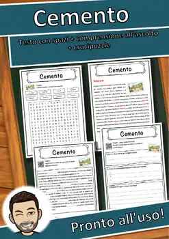
Cemento – Italian Reading: Cloze Text, Listening Task & Word Search (Scheda)
Cecità – Italian Reading: Cloze Text, Listening Task & Word Search (Scheda)
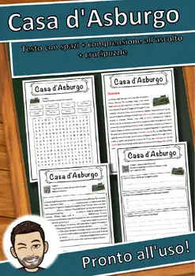
Casa d'Asburgo – Italian Reading: Cloze, Listening & Word Search
Cartolina postale – Italian Reading: Cloze, Listening & Word Search
Battesimo – Italian Reading: Cloze Text, Listening Task & Word Search (Scheda)
Avverbio – Italian Reading: Cloze Text, Listening Task & Word Search (Scheda)
Esagono – Italian Reading: Cloze Text, Listening Task & Word Search (Scheda)
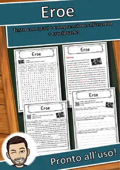
Eroe – Italian Reading: Cloze Text, Listening Task & Word Search (Scheda)
Erbio – Italian Reading: Cloze Text, Listening Task & Word Search (Scheda)
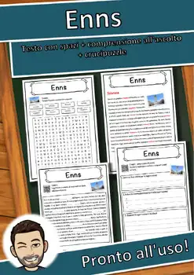
Enns – Italian Reading: Cloze Text, Listening Task & Word Search (Scheda)
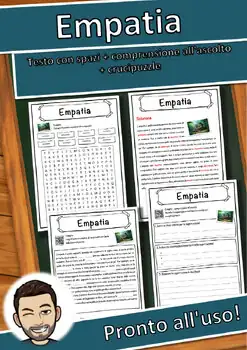
Empatia – Italian Reading: Cloze Text, Listening Task & Word Search (Scheda)
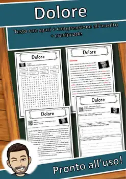
Dolore – Italian Reading: Cloze Text, Listening Task & Word Search (Scheda)
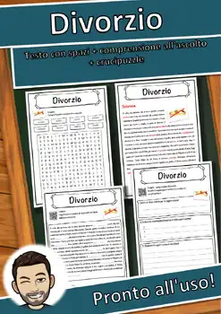
Divorzio – Italian Reading: Cloze Text, Listening Task & Word Search (Scheda)
Disturbo depressivo – Italian Reading: Cloze, Listening & Word Search
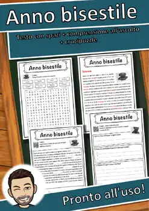
Anno bisestile – Italian Reading: Cloze, Listening & Word Search
Anglosassoni – Italian Reading: Cloze, Listening & Word Search
Amore – Italian Reading: Cloze Text, Listening Task & Word Search (Scheda)
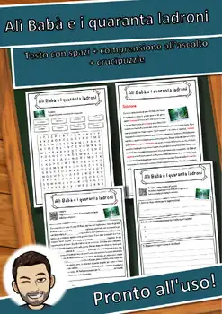
Alì Babà e i quaranta ladroni – Italian Reading: Cloze, Listening & Word Search
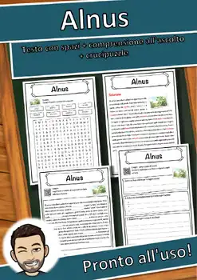
Alnus – Italian Reading: Cloze Text, Listening Task & Word Search (Scheda)
Disco di Nebra – Italian Reading: Cloze, Listening & Word Search
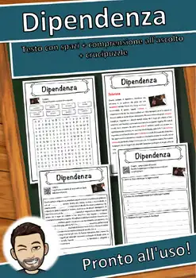
Dipendenza – Italian Reading: Cloze Text, Listening Task & Word Search (Scheda)
Dio – Italian Reading: Cloze Text, Listening Task & Word Search (Scheda)
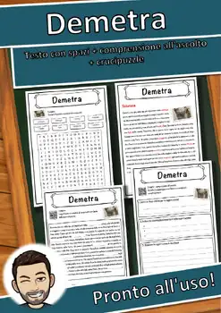
Demetra – Italian Reading: Cloze Text, Listening Task & Word Search (Scheda)
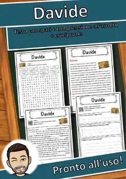
Davide – Italian Reading: Cloze Text, Listening Task & Word Search (Scheda)
Cranio – Italian Reading: Cloze Text, Listening Task & Word Search (Scheda)
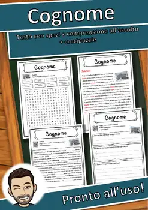
Cognome – Italian Reading: Cloze Text, Listening Task & Word Search (Scheda)
Circonferenza – Italian Reading: Cloze, Listening & Word Search
Circolo polare – Italian Reading: Cloze, Listening & Word Search
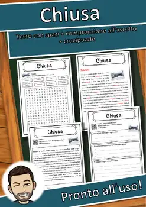
Chiusa – Italian Reading: Cloze Text, Listening Task & Word Search (Scheda)
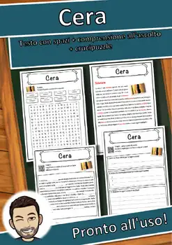
Cera – Italian Reading: Cloze Text, Listening Task & Word Search (Scheda)
Cenerentola – Italian Reading: Cloze Text, Listening Task & Word Search (Scheda)
Boeri – Italian Reading: Cloze Text, Listening Task & Word Search (Scheda)
Bile – Italian Reading: Cloze Text, Listening Task & Word Search (Scheda)
Barone di Münchhausen – Italian Reading: Cloze, Listening & Word Search
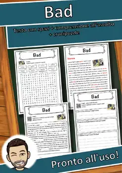
Bad – Italian Reading: Cloze Text, Listening Task & Word Search (Scheda)
Attrezzo – Italian Reading: Cloze Text, Listening Task & Word Search (Scheda)
Asse terrestre – Italian Reading: Cloze, Listening & Word Search
Argento – Italian Reading: Cloze Text, Listening Task & Word Search (Scheda)
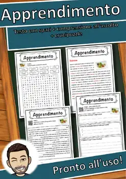
Apprendimento – Italian Reading: Cloze, Listening & Word Search
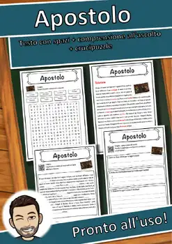
Apostolo – Italian Reading: Cloze Text, Listening Task & Word Search (Scheda)
Anima – Italian Reading: Cloze Text, Listening Task & Word Search (Scheda)
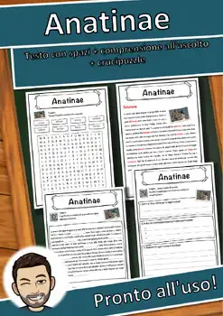
Anatinae – Italian Reading: Cloze Text, Listening Task & Word Search (Scheda)
Amicizia – Italian Reading: Cloze Text, Listening Task & Word Search (Scheda)
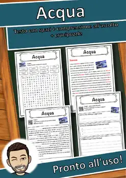
Acqua – Italian Reading: Cloze Text, Listening Task & Word Search (Scheda)
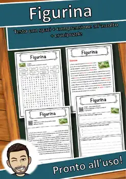
Figurina – Italian Reading: Cloze Text, Listening Task & Word Search (Scheda)
No resources found – try a different search term or filter.